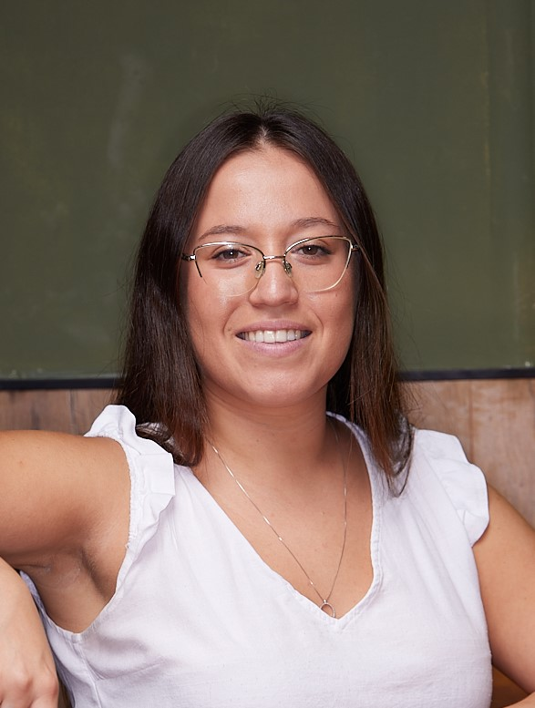

Idan Yolesh

Summary
A 2nd year CS and Bioinformatics student with 5 years of experience in SQL, guidance and management in 8200 and Brandtotal (startup). A team player, motivated, dedicated, and eager to learn. Looking for a software development position.
Skills
Java, C++, Python, SQL, Data structures, OOP, Design patterns.
Education
Ben-Gurion University
2021 – present
B.Sc. in Computer Science and Bioinformatics.
8200
2014 – 2015 (5 months)
Special Studio for Analysis (שחקים אע"מ)
Projects
- (C++) Memory Management object oriented program for building a coalition – handling memory and memory leaks.
- (Java) “Set” game card – handling multi-threading, deadlocks, livelocks and performance improvement.
- (Java, C++) Client-Server world cup informer – handling cross-language communication, networking and concurrency. Using Reactor and Thread Per Client design patterns.
Work Experience
Data Analysis Team Leader (Brandtotal)
2020-2021 (2 years)
- Wrote SQL queries and generated reports for both clients and internal needs.
- Initiated, designed, and improved internal processes.
- Detected bugs and raised suggestions for the platform.
- Product Manager for an internal system - defined needs and design.
- Led an external team in Bangladesh and NY and Mentored new interns.
Data Analyst, team leader, course commander (8200)
2015-2018
- Led teams in the collection of high-sensitivity information and analyzed targets based on extensive databases.
- Worked with partners and consumers, while focusing on resources allocation, prioritization and efficiency, utilizing opportunities and reflecting needs and interests.
- Submitted and managed short and long term projects.
- Created solutions to unexpected problems.
Contact